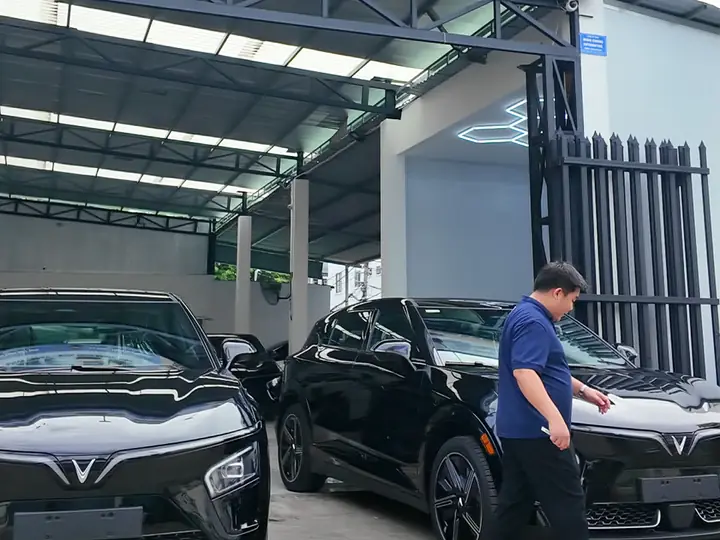
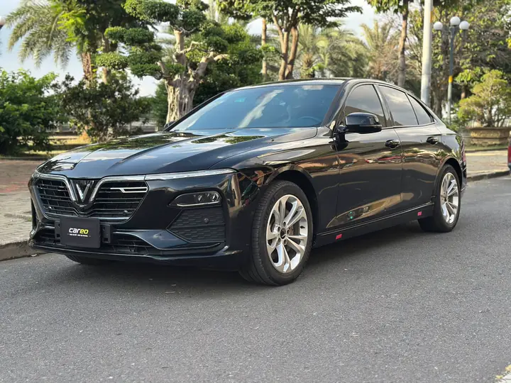
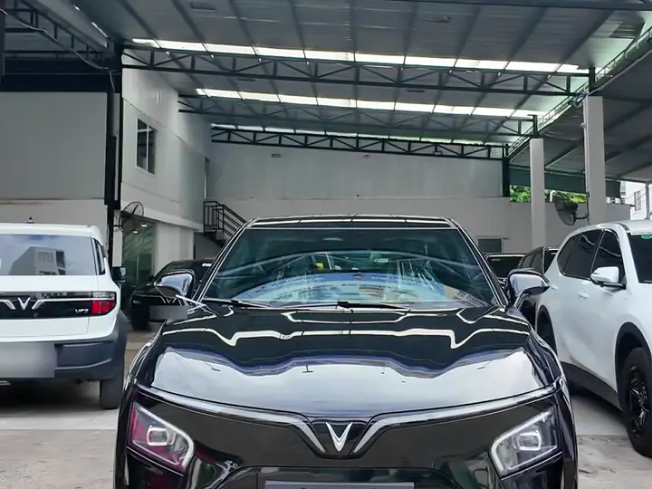
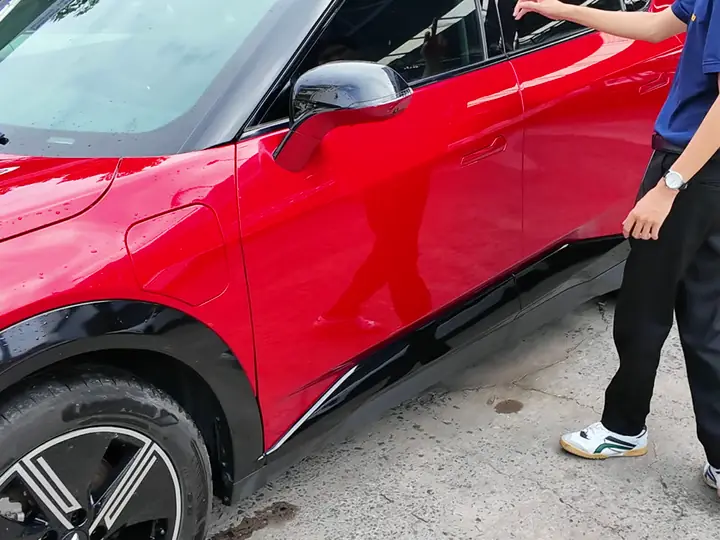

So sánh xe
Chọn tối đa 3 xe. Quãng đường là ước tính ở mức tiêu thụ ví dụ, chừa lại 20% pin.
Anh/chị chọn xe để so sánhChọn trong danh sách ở trên, hoặc bấm ô So sánh ở trang xe đang có.
 |  |  |  |  |  |  |  |  |  |  |  |  | |
|---|---|---|---|---|---|---|---|---|---|---|---|---|---|
| Giá | Liên hệ | Liên hệ | Liên hệ | Liên hệ | Liên hệ | Liên hệ | Liên hệ | Liên hệ | Liên hệ | Liên hệ | Liên hệ | Liên hệ | Liên hệ |
| Phiên bản | Bản S | Bản Plus | Bản Plus | Bản cao cấp | Đăng ký 01/2026 | Bản cao cấp | Bản S | 2 cầu | Bản Plus | Bản tiêu chuẩn | 1 cầu | Bản Eco | Bản cao cấp |
| Đời xe | 2024 | 2024 | 2024 | 2019 | 2025 | 2020 | 2024 | 2026 | 2025 | 2022 | 2026 | 2024 | 2020 |
| Đã chạy | 25.021 km | 76.411 km | 65.314 km | 52.908 km | 8.711 km | khoảng 37.000 km | 108.155 km | 16 km | khoảng 10.000 km | khoảng 26.000 km | 16 km | 25.000 km | khoảng 43.000 km |
| Nhiên liệu | Điện | Điện | Điện | Xăng | Điện | Xăng | Điện | Điện | Điện | Xăng | Điện | Điện | Xăng |
| Pin (hãng) | Đang xác minh | Đang xác minh | 37,23 kWh | Không áp dụng | 18,64 kWh | Không áp dụng | Đang xác minh | 75,3 kWh | 37,23 kWh | Không áp dụng | 75,3 kWh | 59,6 kWh | Không áp dụng |
| Đi được, ước tính | Chưa tính được | Chưa tính được | khoảng 210 km | Đổ xăng | khoảng 150 km | Đổ xăng | Chưa tính được | khoảng 350 km | khoảng 210 km | Đổ xăng | khoảng 350 km | khoảng 280 km | Đổ xăng |
| Dẫn động | Cầu trước | 2 cầu (AWD) | Cầu trước | Số tự động 8 cấp | Cầu sau | Cầu sau, số tự động 8 cấp | Cầu trước | 2 cầu (AWD) | Cầu trước | Cầu sau, số tự động 8 cấp | Cầu trước | Cầu trước | Cầu trước, số tự động |
| Màu xe | Đỏ | Đỏ – đen | Trắng | Trắng | Xám | Đen | Xanh dương | Đen | Trắng | Đen | Đen | Đỏ – đen | Trắng |
| Nội thất | Đen | Đen | Đen | Be | Xám | Nâu bò | Đen | Nâu | Đen | Nâu đen | Nâu | Đen | Đen |
| Ảnh, video | 13 ảnh, có video | 11 ảnh | 6 ảnh | 17 ảnh | 13 ảnh, có video | 19 ảnh | 13 ảnh | 3 ảnh, có video | 7 ảnh | 15 ảnh | 3 ảnh, có video | 3 ảnh, có video | 3 ảnh, có video |
| Lưu ý | Không có | Không có | Không có | Không có | Không có | Không có | Không có | Không có | Không có | Không có | Không có | Quyền sạc miễn phí tới 2027: nhờ anh/chị kiểm tra lại với hãng khi xem xe. | Đời xe (2019 hay 2020) đang chờ đối chiếu giấy tờ. |
| Chi tiết | Xem xe | Xem xe | Xem xe | Xem xe | Xem xe | Xem xe | Xem xe | Xem xe | Xem xe | Xem xe | Xem xe | Xem xe | Xem xe |